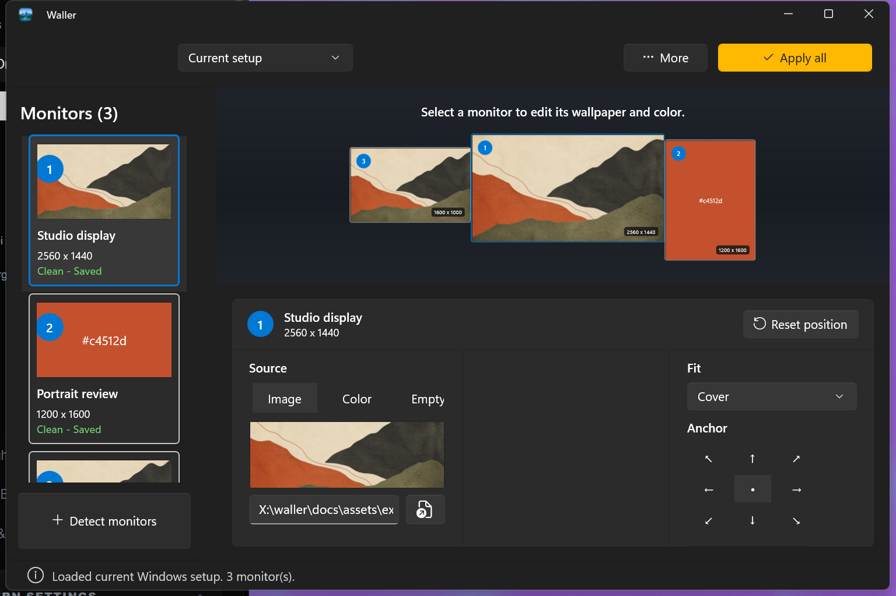
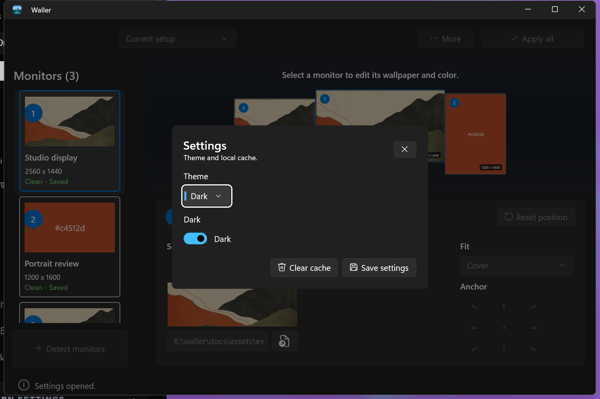
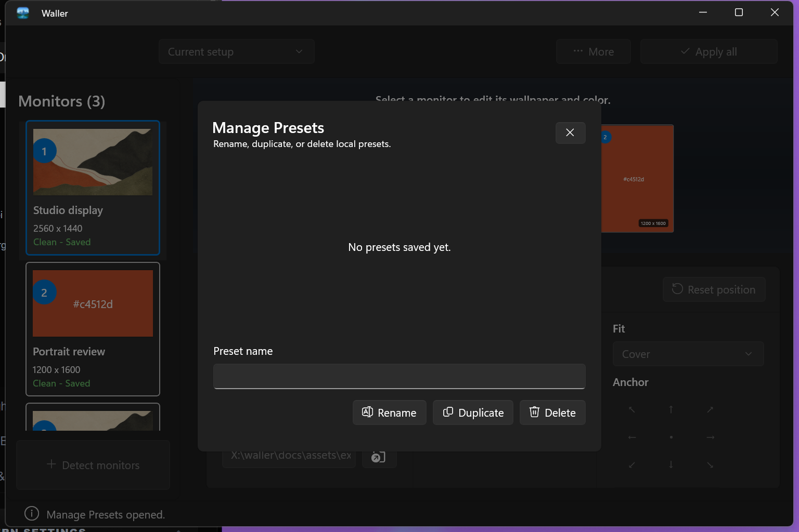
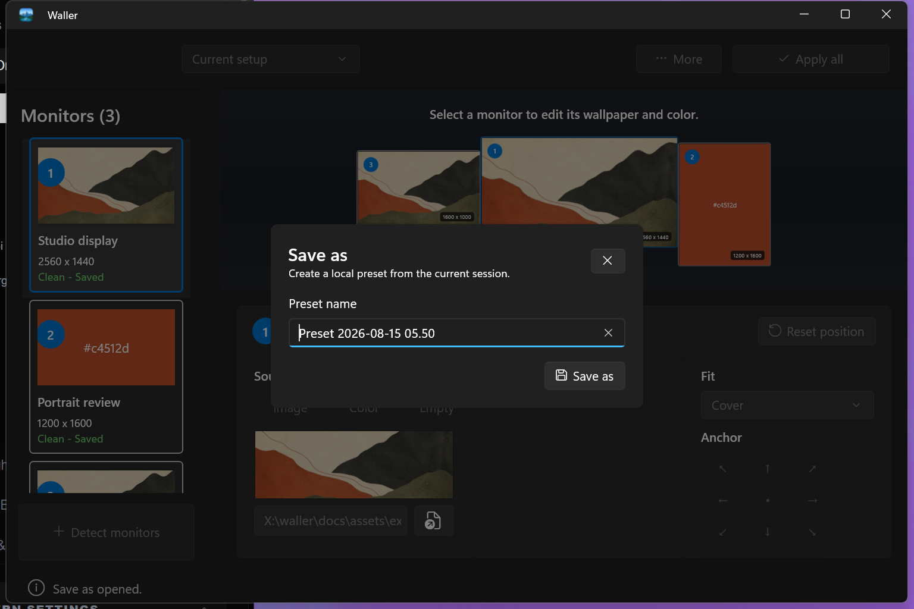

Native WinUI 3 · Windows 10/11
One wallpaper workspace for every monitor.
Compose independent images, colours, fit modes, and anchors. Save the arrangement as a local preset. Apply only when it is ready.

The working model
A map, an editor, and a clear commit point.
- 01
Detect
Read the connected Windows topology into one editable Active Session.
- 02
Compose
Choose a source and placement for each display without touching Windows.
- 03
Save or apply
Keep reusable presets local, then render and apply only on command.
Runtime proof
The real app, exercised with fictional data.
These captures come from an isolated WinUI package. The demo did not inspect personal presets or apply a wallpaper.



Open source · MIT